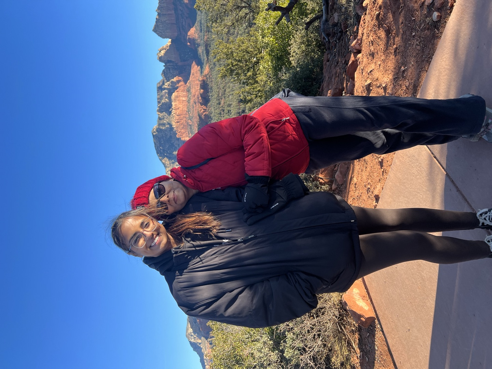

I’m interested in what happens between the neat boxes.
Between sensor and controller. Between a model and its evidence. Between a difficult experience and the words someone needs to describe it.

How I approach problems
Technical rigor and human context belong together.
Electrical and computer engineering taught me to trace a fault through signals, timing, interfaces, and physical behavior instead of guessing at the symptom. Advocacy and peer support taught me another form of attention: listen for what is not being said, understand the context, and communicate without losing the person inside the problem.
I bring both habits to the work—whether I am investigating a retrieval miss, integrating sensors and actuation, speaking about teen dating violence, or supporting a peer.
Outside formal work
Perspective comes from staying connected.
Mentoring young people in the Upper Valley has kept me connected to a community beyond campus. Peer-support work has taught me how to stay grounded when someone needs clarity and care. Leadership has shown me that better systems depend on the relationships and trust beneath them.
Those experiences shape the engineer I am becoming: attentive to consequences, comfortable crossing boundaries between disciplines, and willing to take responsibility for the details.